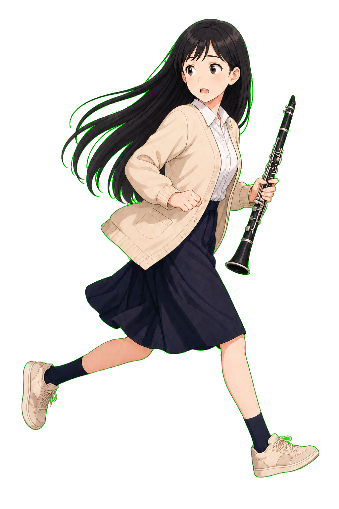

MAYU ESCAPE MISSION
たるとが大好きなまゆを見つけた！クラリネットを持って、全力で逃げ切れ！

STORY
黒髪の女子大生・まゆは、とーちゃんとかーちゃんの姪っ子。たるとはまゆが大好きだけど、まゆはたるとがちょっと苦手。
追いつかれる前に、ゴールで待つとーちゃんとかーちゃんのところへ逃げよう！まゆのクラリネットから出る音符で、酔っぱらいのおじさんたちをやっつけろ！いちごで回復し、ホネッコでたるとの気をそらそう。飛んでくるカモさんには音符を届けて喜んでもらおう！
ESCAPE COMPLETE!